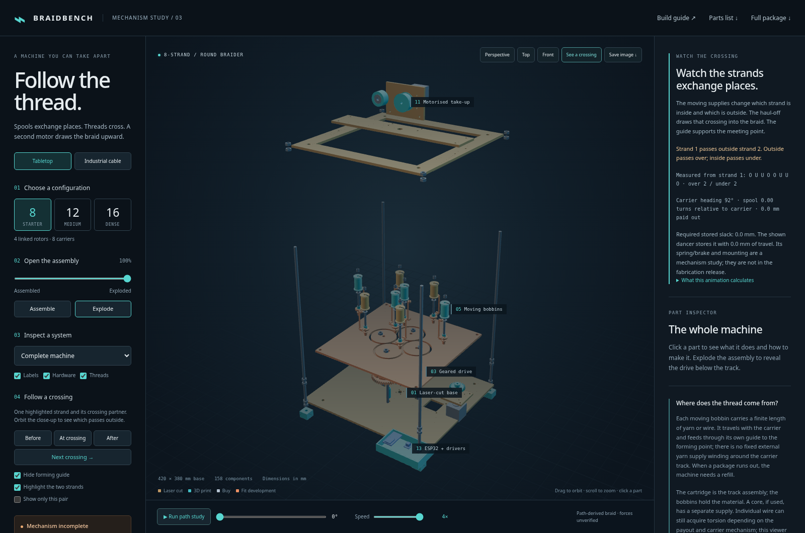
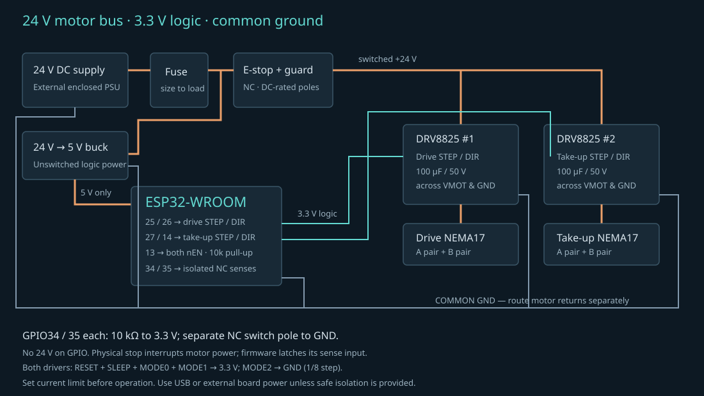

BRAIDBENCH / ENGINEERING STUDY 01
From moving spools
to a braided cord.
A modular tabletop braider using laser-cut plywood, printed rotors and bobbins, two small stepper motors, and an ESP32.
The first useful build is a hand-operated two-rotor transfer test. If a carrier follows the intended branch repeatedly, the rest of the frame, drive, take-up and controller become worth assembling. If it circles the same rotor, jams or needs a nudge, change the guide geometry before scaling up.
Two small experiments before the full machine
Start with the carrier guidance coupon to compare a round foot and a pointed shoe at a straight crossing. Then use the tension calibration board to measure bobbin braking, slider friction and two-leg loop storage. Both have their own laser/print files, editable CAD, interactive model and hand-test instructions. Neither is a drop-in completion of the main carrier: a curved-track two-rotor handoff test and integration are still required.
Open, rotate, explode
Double-click OPEN-MODEL.html for the self-contained offline viewer. Or run ./start.sh from the project folder and open http://localhost:8765. Select 8, 12 or 16 strands; drag to orbit; scroll to zoom; use Explode; click a component for its purpose and fabrication file. “Run path study” animates mathematically prescribed carrier transfers. Drag the Speed bar from 0.25× to 4×; changing speed preserves the current position. The phase slider spans one complete carrier circuit (720°, 1,080° or 1,440° of rotor travel for 8, 12 or 16 strands). “See a crossing” exposes formation and traces the measured crossing history. The compact output retains every guide’s crossing sequence. Finite-wire clearance is checked through formation; calibrated tension, friction and positive carrier guidance remain unresolved. The visible inlet pulleys, fixed return pulley, moving dancer and spring are mechanism explanations, not exported fabrication parts. The current build instructions therefore still require completion of that mechanism.

New industrial comparison: choose Industrial cable in the viewer to inspect 48 / 72 moving bobbins, parallel wire bundles, a core payoff and finished-cable take-up. Read where the thread comes from and how bobbin capacity limits a run. This comparison is explanatory viewer geometry, separate from the tabletop fabrication files.
How the mechanism makes a braid
- The motor turns a 20-tooth pinion. It drives one 40-tooth rotor. Adjacent rotors mesh and turn in opposite directions; the full gear ring must contain an even number of rotors.
- Each rotor has four open carrier pockets. A carrier travels around a rotor, then needs to transfer into the neighbouring rotor at a tangent point. The fixed track and a positively guided carrier must choose the outgoing route. This last constraint is not resolved by simply cutting tangent circular grooves.
- The moving yarns converge at the forming eye. Their changing positions create crossings. There is no spinning hook that merely twists all the strands into one bundle.
- A second motor pulls the product through rollers. Its feed per rotor revolution changes crossing spacing. A constant-diameter roller is easier to calibrate than winding directly onto a reel that grows in diameter.
Choose the braid and strand count
| Option | What changes | Provided / limitation |
|---|---|---|
| 8-strand round cord | 4 rotors, 8 carriers. Best starting point for observing handoffs. | Complete study CAD, provisional loading and fabrication candidates. |
| 12-strand round cord | 6 rotors, 12 carriers; larger rotor ring. | Separate base, track and indexed rotor files. Same frame envelope. |
| 16-strand round cord / sleeve | 8 rotors, 16 carriers; larger central opening. | Separate CAD. More simultaneous tension adjustments; prove 8 first. |
| Braid over a core | Feed a small cord or tube through the centre. Match the forming eye, roller gap and friction to its diameter. | Same carrier architecture. Start with a soft core that fits the 12 mm guide clearance; a smooth insert reduces that opening. |
| Hollow tubular braid | Use a removable mandrel / suitable forming guide and control tension. More carriers can improve coverage at a given diameter. | Possible use of round cartridges; hollow size and coverage are not predicted or validated here. |
| Flat 3 / 5 / 7-strand braid | A linear chain of rotors, end turnarounds, different carrier loading and flat forming guide. | Expansion option only; no flat-cartridge fabrication CAD in this package. |
| 1-over-1 / 2-over-2 patterns | Compatible track geometry, horn occupancy and phasing determine crossing order. | Not a software switch. Every supplied loading measures two-over/two-under in the guide-history model. One-over/one-under needs a different compatible loading/track; it is not provided here. This is not a physical sample result. |
Commercial maypole machines offer 8, 12 and 16 carriers and several crossing patterns, but that does not establish those capabilities for this prototype. See Wardwell’s B9 specification. Removing arbitrary bobbins does not automatically produce a balanced braid with fewer strands.
Dimensions and machine assumptions
| Item | Nominal design | Adjust before cutting |
|---|---|---|
| Footprint / overall height | 420 × 380 mm / approximately 590 mm including feet | Clear extra bench space for supply, guards and braid collection. |
| Laser stock | 6 mm birch plywood; largest part 420 × 380 mm | Assumed 600 × 400 mm bed. Measure actual thickness; use only stock approved by your laser workshop. |
| Printer | 220 × 220 mm assumed; largest printed part 132 × 78 mm | Parts fit individually; do not scale the assembly to compensate for fit. |
| Rotor gears | Module 2; 40 teeth; 20° pressure angle; 80 mm centres; 0.18 mm nominal tangential backlash | Test printed mesh. These are involute profiles, not decorative teeth. |
| Gear-centre ring radius | 8: 56.569 mm · 12: 80 mm · 16: 104.525 mm | R = 40 / sin(π / rotor count). |
| Carrier / bobbin | 4.8 mm neck in 5.6 mm slot; 8 mm drive pin; 26 mm bobbin flange × 42 mm height | The 0.8 mm diametral track clearance is provisional. Test printed parts against the cut coupon. |
| Bearings | Two 608 bearings per rotor + two in the idler | 608 nominal 8 × 22 × 7 mm; seats modelled at 22.2 mm. Retention still needs detailing. |
| Yarn | 0.45 mm diameter strands in the close-up reconstruction; physical material not qualified | The geometric clearance checks apply to those 0.45 mm strands. They do not establish yarn strength, bending behaviour, tension settings or full hardware clearance. The earlier 1 mm cord suggestion remains unsupported. |
Provisional carrier loading
The two carrier families are balanced: half clockwise, half counterclockwise. Use the numbered top views to inspect the initial arrangement: 8 strands · 12 strands · 16 strands. These loading drawings are for reference, not laser cutting. Match the indexed rotor pocket orientation to the CAD before positioning carriers.


What to cut, print and buy
Laser-cut components
One base for the chosen configuration; one experimental track; upper frame; take-up bridge; drive motor riser; take-up face; forming guide; fit coupon. SVG and DXF files are in fabrication/laser.
Each file is a separate part, not a nested full sheet. Import at 1:1 mm. Track files contain the outer frame and separate supported islands. Keep the islands and label their positions.
Printed components
One indexed rotor per station, one pinion, one carrier / bobbin / adapter / guide / guide arm per strand, axle spacers, feet, capstan, idler and electronics tray. STL and STEP files are in fabrication/printed.
Rotor filenames include strand count and station number. Keep that identity after printing; the horn-to-tooth phase varies with station.
| Purchased hardware | 8 strands | 12 strands | 16 strands |
|---|---|---|---|
| ESP32-WROOM DevKit, 2 × DRV8825, 2 × NEMA17 motors | 1 controller, 2 drivers, 2 motors for every configuration | ||
| 608-2RS bearings | 10 | 14 | 18 |
| 8 mm stationary rotor axles, approximately 100 mm stock | 4 | 6 | 8 |
| Metal bearing inner-race spacers, 12 mm OD / 8.2 mm bore | 4 × 10 mm + 4 × 12 mm | 6 × 10 mm + 6 × 12 mm | 8 × 10 mm + 8 × 12 mm |
| M8 mast threaded rods, 500 mm | 4; add approximately 32 mast nuts and washers, plus axle and idler retention hardware | ||
| M6 smooth-shank bobbin spindles, approximately 60 mm; friction washers; light compression springs; retention nuts | 8 sets | 12 sets | 16 sets |
| 4 × 70 mm M3 centre-island standoffs (6 mm OD), flush top screws; adjustable idler axle; two metal angle brackets; 4 × 34 mm M4 motor standoffs; M3/M4 fasteners | Measure stack-up and purchased components; these connectors are not all represented as solids in the CAD. | ||
| PTFE / ceramic yarn eyes; silicone roller sleeve; rubber feet pads | Select to fit yarn and purchased hardware; deburr every contact surface. | ||
| 24 V external enclosed DC supply, approximately 4 A starting specification; 24→5 V buck converter | Select supply, wire gauge and fuse after motor current and startup measurements. No mains wiring is part of this design. | ||
| 100 µF / 50 V electrolytic capacitors, input fuse, DC-rated latching emergency stop, dual-pole guard switch, terminal blocks, strain reliefs, enclosure | 2 local capacitors, one per driver; switch motor supply independently of ESP32 firmware. | ||
model-parts.csv counts the modelled solids. The table above adds unmodelled workshop hardware; neither is an exact shopping basket for an already qualified machine.
Printing and laser setup
- Cut
fit-coupon.svgfirst. Measure openings with callipers and test actual bearings, rod and a printed carrier neck. Establish a CAM kerf offset once; the SVGs contain nominal outlines with no kerf compensation. - For the first trial, print rotors and bobbins in PLA or PETG at 0.2 mm layers, 4 perimeters, around 40% infill. These are starting settings, not tested load ratings. Print each rotor gear-down / bore vertical; inspect the upper bearing shoulder and the gear overhang.
- The bobbin’s upper flange needs support, or split the model into printable halves and join concentrically. The carrier has downward-facing features; orient and support them, then finish the neck and drive-pin surfaces.
- Ream or carefully finish bearing seats and spindle bores to match actual parts. Do not force oversized bearings into a brittle print. Detail axial retention so neither rotor nor bearing can climb off its axle.
- Remove char and rough edges from track surfaces. Use a replaceable low-friction wear layer only after rechecking neck length and axial clearance. Laser-material settings belong to the specific machine and stock.
Build in stages
- Prove one handoff by hand. Print rotors 01 and 02 from the 8-strand set, two axle spacers and one carrier. Mount their axles 80 mm apart on scrap. Use the corresponding local section of the track study. Add the carrier with an empty bobbin and turn slowly through both directions. Observe whether it takes the required branch without losing support. Design a two-point / shaped guide shoe and transfer insert if needed; the current single-pin carrier cannot guarantee this. Do not power this test.
- Resolve bearings, retention and the upper track. In the CAD, base top is Z=6, spacer top / lower bearing bottom Z=40, gear Z=48–56, upper bearing Z=57–64, horn disk Z=64–70, track Z=76–82. The retaining disk sits below the track and the carrier foot above it. Clamp the bearing inner races with a 10 mm metal spacer between bearings and a 12 mm metal spacer above the upper bearing, up to the track underside. Their 12 mm outside diameter clears the 14 mm horn centre hole. Shim the lower stack to the measured plate thickness; do not clamp the rotating outer races. Maintain running clearance without vertical escape. The circular track islands mount on stationary rotor axles; the separate central island mounts on four 70 mm M3 standoffs. Countersink its top fasteners flush after laser cutting so carrier feet can pass. All islands remain stationary.
- Assemble the gear ring. Cut the chosen base. Fit the four masts, feet and rotor axles. Install the indexed rotors in order, viewed from above: station 01 is on +X (right); later stations proceed counterclockwise. Match the CAD tooth/horn phases. Turn the full loop by hand before fitting carriers; it must turn without a tight spot.
- Fit the drive motor. The 66 mm motor riser stands on four 34 mm spacers above the 6 mm base. Mount the motor with four M3 screws on its 31 mm pattern. The 20T pinion drives station 01 at 2:1 reduction. Fix it to the 5 mm shaft with a correctly prepared grub screw; check shaft flat, axial engagement and phase.
- Install carriers and bobbins. Resolve the guide shoe first. Fit a retained spindle, felt drag washer, bobbin, light spring and adjustment nut. Attach and smooth each yarn guide. Set similar drag using a spring scale at a full and nearly empty bobbin. A friction brake has changing yarn tension as package radius changes; it is not a constant-tension dancer.
- Fit the forming guide and take-up. Support the guide at Z=380 on the rear masts. Mount the upper frame at Z=470 and bridge at Z=476. Use two metal angle brackets to secure the vertical motor face. Fit driven roller, silicone sleeve and idler; adjust the slotted idler axle to grip without crushing. The pictured braid exits upward at the nip; add a smooth downstream guide and collection container.
- Enclose the moving parts and wire controls. Add a physical guard around gears, bobbins and the roller nip, plus a lid and strain relief on the electronics. These guards and brackets are not fully designed in this package. Wire emergency stop / guard interruption of the motor bus before allowing software to enable motion.
- Thread and commission at low speed. With motor power disconnected, lead each thread from its bobbin through its guide, then gather the threads through the forming eye and rollers. Hand-turn complete cycles with light tension. Only after reliable handoffs, no interference and verified power interruption, qualify the mechanism and enable firmware. Start around 1 rotor rpm and adjust take-up while observing the first short sample.
ESP32 wiring
Use an original ESP32-WROOM DevKit for this pin map; ESP32-C3/S3 boards need a new pin assignment. The two motors share an enable signal but have independent STEP / DIR signals. This circuit is a bench prototype, not a safety-rated machine controller.

| ESP32 pin | Connection | Notes |
|---|---|---|
| GPIO25 / GPIO26 | Drive STEP / DIR | DRV8825 #1 |
| GPIO27 / GPIO14 | Take-up STEP / DIR | DRV8825 #2 |
| GPIO13 | Both nEN inputs | 10 kΩ pull-up to 3.3 V: drivers disabled during reset / boot. |
| GPIO32 | Optional normally-open START button to GND | Internal pull-up; only works after explicit ARM. |
| GPIO33 | Normally-closed STOP button to GND | Internal pull-up; open contact latches a software stop. |
| GPIO34 | Guard NC auxiliary contact to GND | External 10 kΩ pull-up to 3.3 V; input-only pin. |
| GPIO35 | Emergency-stop NC auxiliary contact to GND | External 10 kΩ pull-up to 3.3 V; input-only pin. |
| 3.3 V | Both drivers’ RESET and SLEEP, MODE0 and MODE1 | MODE2 to GND gives 1/8 microstepping. Tie unused logic inputs deliberately. |
| GND | ESP32, buck, PSU negative, driver logic / VMOT ground | Common reference; route motor current separately from sensor return wires. |
| 5 V board input | Regulated buck output | Use one board power source at a time. Disconnect external 5 V while using USB if the board does not provide safe power isolation. |
| Each driver A1/A2, B1/B2 | Two measured stepper winding pairs | Identify pairs with a meter. Disconnect supply before any motor rewiring. |
DRV8825 carriers accept 3.3 V STEP/DIR logic. Place a local electrolytic across each driver’s VMOT/GND, with polarity correct; the proposed 100 µF / 50 V part exceeds Pololu’s 47 µF minimum. Set current limit to the actual motor and cooling arrangement. On the genuine Pololu 0.1 Ω-sense board, I_limit = 2 × VREF; clone sense resistors may differ. Follow the driver manufacturer’s wiring and current-limit instructions and Espressif’s board documentation.
Starter firmware and pitch control
braidbench.ino provides low-speed STEP/DIR control, a coupled acceleration ramp, latched input faults and explicit arming. There is no wireless control. MECHANICS_QUALIFIED is deliberately false in the supplied file because the transfer geometry is unresolved. Set it true only after the mechanical commissioning steps above are satisfied.
Open the sketch in Arduino IDE, install Espressif’s ESP32 board support and select the actual WROOM board. No additional motion library is required. Hardware-specific compilation / flashing and bench execution have not been performed here; see the validation report for the narrower host-side checks.
Serial monitor: 115200 baud, newline RESET clear a fault only when all NC contacts are closed ARM enable the driver outputs; no motion yet RUN 1 25 1 rotor rpm; 25 mm take-up per rotor revolution STOP stop immediately and disable outputs STATUS print state, requested rotor rpm and feed ratio RUN limits: 0.2–5 rotor rpm; 1–100 mm per rotor revolution. After any stop/fault: RESET if needed, then ARM again. The physical emergency stop cuts the motor bus independently.
For a 200-step motor at 1/8 stepping, there are 1,600 STEP pulses per motor revolution. A 20T pinion driving a 40T rotor requires 3,200 drive pulses per rotor revolution. With a nominal 40 mm capstan, one take-up revolution moves approximately 125.66 mm. Measure the roller with its sleeve under load before relying on that number.
drive STEP/s = rotor_rpm × 3200 / 60 take-up STEP/s = rotor_rpm × mm_per_rotor_rev × 1600 / (60 × π × effective_diameter_mm)
Feed per rotor revolution is an operational ratio, not automatically braid pitch or picks per inch. Those also depend on the actual carrier trajectories and crossing repeat. Mark 100 mm on a test length, measure real travel and adjust CAPSTAN_DIAMETER_MM. Record yarn, loading, speed, feed ratio and a photo of the resulting braid.
What has been checked
| Check | Evidence / limit |
|---|---|
| CAD solids | FreeCAD BREP validity and positive volume for all unique shapes; 28 closed STL meshes; machine-readable report. This does not test strength, contacts, fit or missing fasteners. |
| Carrier paths | Ideal circular paths with instantaneous, forced transfers; eight rotor revolutions sampled at 0.18°. Equal clockwise and counterclockwise populations are enforced. A conflict graph tests 26 mm bobbin envelopes against a 27 mm separation threshold; a between-sample motion bound checks that clearance cannot dip below the threshold. Motion report. Guide-post envelopes, yarn interactions and actual transfer success are excluded. |
| Braid geometry | Finite-wire compact output, continuous formation clearance bounds, individual crossing histories and sampled source-route checks. Geometry report; method and limits. No calibrated force equilibrium or full hardware-interference qualification. |
| Full build | No physical parts printed or cut; no assembly or braid produced; no torque, durability or tension measurements. |
| Firmware | Source and host-stub checks only if listed in the software report; no real ESP32 compile or bench run. |
| Animation continuity | All transfer events, moving-part orientations and complete-circuit seams for 8 / 12 / 16; playback speed phase preservation. See animation-validation.json. This checks visual motion only. |
| Interactive viewer | Local browser checks, count switching, explode, path control, part inspection and offline viewer recorded in software-validation.json. |
Engineering work still required
- Positive carrier guidance at every transfer: develop the guided shoe and crossing geometry. This is the main feasibility gate.
- Complete the carrier: guide-post attachment, retained spindle, bobbin brake, yarn eye and anti-lift behaviour. Test at full and empty spool conditions.
- Qualify mechanical interfaces: bearing fits / retainers, axle clamping, gear backlash, motor brackets, pinion and capstan set screws, idler slot retention and mast stiffness.
- Detail and fit guarding: enclose gears and nip points; implement physical motor-power interruption, driver cooling and strain relief.
- Establish the braid: confirm actual crossing sequence on a short sample, calibrate feed, then develop any 1-over-1, 2-over-2 or flat-cartridge variant.
Files and design provenance
cad/ contains editable FreeCAD assemblies and STEP interchange files. The source of dimensions is tools/generate_cad.py; rerun with Python and FreeCAD’s Python modules installed. FreeCAD files contain named solid parts; regeneration from the script changes dimensions. They are not a fully constrained feature-history assembly. models/ contains GLB and viewer data; GLB uses metres and Y-up, while CAD uses millimetres and Z-up. Firmware and fabrication files are local and versionable.
The mechanical geometry and program are original for this project. External sources establish mechanism precedents and component interfaces; they do not validate this design. No third-party braider CAD has been copied into the package. Three.js is vendored under its included MIT license.
- Wardwell — B9 configuration and pattern options.
- US4774871A — horn gears, carrier guidance and maypole tracks.
- Jan Elmar Krauskopf — formal carrier-path and collision research; useful for extending the discrete model.
- Eric Larue Martin — a four-wire DIY braider precedent. Its CAD has separate licensing and was not reused.
- Pololu — DRV8825 wiring, logic and current limits.
- Espressif — ESP32-DevKitC pinout and power options.